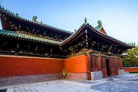

Shijiazhuang is the capital and largest city of North China's Hebei Province. Administratively a prefecture-level city,
it is about 266 kilometres (165 mi) southwest of Beijing, and it administers eight districts, two county-level cities, and 12.
counties.As of 2015 it had a total population of 10,701,600 with 4,303,700 in the central (or metro) area comprising the seven
districts and the county of Zhengding largely conurbated with the Shijiazhuang metropolitan area as urbanization continues to proliferate.
Shijiazhuang's total population ranked twelfth in mainland China.
I grow up in the city SHIJIAZHUANG, and love there lot. There are many delicious foods, and beautiful cultures. The city of Shijiazhuang is similar to Beijing in that all roads run from north to south and east to west, making the city easy to navigate. Many roads have cycle paths making it cyclist friendly. In the heart of the city is the Hebei Museum which was refurbished in 2013 and 2014. It holds regular events, mostly showing traditional Chinese art and artifacts. The Yutong International Sports Centre hosts the Shijiazhuang Ever Bright football matches as well as holding pop concerts. Shijiazhuang Zoo is located on the west side of the city. The zoo has 3,000 animals of 250 species including flamingos, golden monkeys, manchurian tigers, Indian elephants, giraffes, chimpanzees, kangaroos, seals, white tigers, springboks and pandas. Near the Shijiazhuang Zoo are the Botanical Gardens, offering a range of exotic and native plants both to view and purchase.The Martyrs Memorial can be found in the centre of the city, commemorating the soldiers lost in war.
I love SHIJIAZHUANG, and welcome you all could visit Shijiazhuang in future.